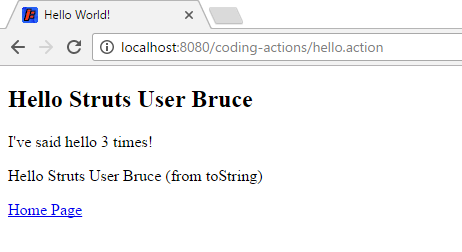

Coding actions
This tutorial assumes you’ve completed the Using Struts 2 Tags tutorial and have a working using-tags project. The example code for this tutorial, coding-actions, is available for checkout from the Struts 2 GitHub repository struts-examples.
Introduction
Coding a Struts 2 Action involves several parts:
- Mapping an action to a class
- Mapping a result to a view
- Writing the controller logic in the Action class
In the previous tutorials we covered how to configure Struts to map a URL such as hello.action to an Action class such as HelloWorldAction (specifically the execute method).
Action Mapping
<action name="hello" class="org.apache.struts.helloworld.action.HelloWorldAction" method="execute">
<result name="success">/HelloWorld.jsp</result>
</action>
The Action mapping above also specified that if the execute method of class HelloWorldAction returns success then the view HelloWorld.jsp will be returned to the browser.
This tutorial will introduce you to the basics of writing the controller logic in the Action class.
Struts 2 Action Classes
Action classes act as the controller in the MVC pattern. Action classes respond to a user action, execute business logic (or call upon other classes to do that), and then return a result that tells Struts what view to render.
Struts 2 Action classes usually extend the ActionSupport class, which is provided by the Struts 2 framework. Class ActionSupport provides default implementations for the most common actions (e.g. execute, input) and also implements several useful Struts 2 interfaces. When your Action class extends class ActionSupport your class can either override the default implementations or inherit them.
If you examine class HelloWorldAction from tutorial Using Struts 2 Tags you’ll see that it extends the class ActionSupport and then overrides method execute.
The method execute is where we placed what we want this controller to do in response to the hello.action.
Method execute of HelloWorldAction
public String execute() throws Exception {
messageStore = new MessageStore() ;
helloCount++;
return SUCCESS;
}
Note that method execute declares it throws an Exception. We’ll cover in a later tutorial how to configure Struts to handle any Exceptions thrown from the Action classes methods.
Processing Form Input In The Action Class
One of the most common responsibilities of the Action class is to process user input on a form and then make the result of the processing available to the view page. To illustrate this responsibility, let’s say that on our view page, HelloWorld.jsp, we want to display a personal hello, such as “Hello Struts User Bruce.”
In the Using Struts 2 Tags example application we added a Struts 2 form to index.jsp.
Struts 2 Form Tags
<s:form action="hello">
<s:textfield name="userName" label="Your name" />
<s:submit value="Submit" />
</s:form>
Make a note of the value of the name attribute for the Struts 2 textfield tag, which is userName. When the user clicks on the submit button for the above form, the action hello will be executed (hello.action). The form field values will be posted to the Struts 2 Action class (HelloWorldAction). The Action class may automatically receive those form field values provided it has a public set method that matches the form field name value.
So for the HelloWorldAction class to automatically receive the userName value it must have a public method setUserName (note the JavaBean convention discussed in tutorial Hello World).
For the example application associated with this tutorial, add the following Java code to class HelloWorldAction.
Add userName to HelloWorldAction
private String userName;
public String getUserName() {
return userName;
}
public void setUserName(String userName) {
this.userName = userName;
}
To personalize the MessageStore message (recall that class MessageStore is storing the message to display) add the following Java code to the HelloWorldAction’s execute method after the statement that instantiates the MessageStore object.
Add userName value to message
if (userName != null) {
messageStore.setMessage( messageStore.getMessage() + " " + userName);
}
Now build and run (mvn jetty:run) the application. Enter your name in the form and click the submit button. You should see the following page.

When the form is submitted, Struts will call any set methods of the HelloWorldAction class that match the form field names. So in this example method setUserName was called and passed the value the user entered in the userName form field.
On the index.jsp we also have a Struts 2 action link (see tutorial Using Struts 2 Tags) that includes a query string parameter: userName=Bruce+Phillips. If you click on that link you should see the following result:

Since the query string parameter is userName, Struts passed the value of that parameter to the setUserName method.
On the view page, HelloWorld.jsp, you can also access the userName value by using the Struts 2 property tag (see tutorial Using Struts 2 Tags). Try showing just the userName value on the view page.
Summary
This tutorial introduced you to how to code the Action class so it can process user input on a form or values in a query string parameter. If the form had numerous fields, it would be cumbersome to have a set method that matches up with each form field. So our next tutorial will cover how to integrate a model class, form fields in the view and form processing in the Action class.
| Return to Using Struts 2 Tags | or | onward to Processing Forms |